Noțiuni introductive
Înainte de a-ți prezenta funcțiile elementare cunoscute, să ne reamintim ce este un reper cartezian, care este definiția unei funcții și ce este graficul unei funcții.
Reper cartezian în plan
Fie 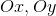 două axe perpendiculare cu aceeași origine, notată cu  , având aceeași unitate de măsură și câte un sens numit pozitiv (de obicei, pe axa orizontală
, având aceeași unitate de măsură și câte un sens numit pozitiv (de obicei, pe axa orizontală  - numită axa absciselor - se alege sensul spre dreapta, iar pentru axa verticală
- numită axa absciselor - se alege sensul spre dreapta, iar pentru axa verticală  - numită axa ordonatelor - sensul este în sus)
- numită axa ordonatelor - sensul este în sus)
Sistemul format de axele se numește sistem ortogonal.
Acest sistem se notează cu  .
.
Reamintim că produsul cartezian a două mulțimi  și
și  este mulțimea tuturor perechilor ordonate
este mulțimea tuturor perechilor ordonate  , cu 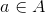, respectiv 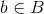.
, cu 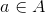, respectiv 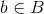.
Produsul cartezian se notează astfel:
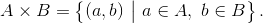
Între mulțimea punctelor planului și mulțimea se poate stabili o corespondență, prin care fiecărui punct  din plan i se asociază o pereche 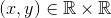 și reciproc, fiecărei perechi i se asociază un punct 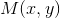 din plan.
din plan i se asociază o pereche 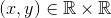 și reciproc, fiecărei perechi i se asociază un punct 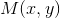 din plan.
În acest reper cartezian distingem patru cadrane, notate în sens trigonometric de la  la 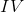. Aceste cadrane, împreună cu axele pot fi descrise ca și submulțimi ale produsului cartezian , astfel:
la 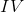. Aceste cadrane, împreună cu axele pot fi descrise ca și submulțimi ale produsului cartezian , astfel:
- pentru cadranul avem mulțimea: 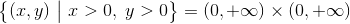 0, \ y> 0 \right \}=(0,+\infty)\times (0,+\infty)">;
- pentru cadranul 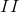 avem mulțimea: 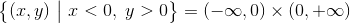 0 \right \}=(-\infty,0)\times (0,+\infty)">;
- pentru cadranul 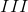 avem mulțimea: 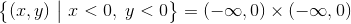;
- pentru cadranul avem mulțimea: 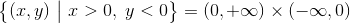 0, \ y< 0 \right \}=(0,+\infty)\times (-\infty,0)">;
- pentru axa avem mulțimea: 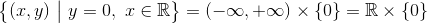;
- pentru axa avem mulțimea: 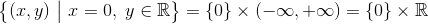.
Aceste mulțimi, pe grafic, se reprezintă astfel:
.png)
Definiția funcției și graficul acesteia
Definiția FE1: Funcție
Un triplet de forma 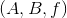 se numește funcție definită pe mulțimea cu valori în mulțimea , dacă , respectiv sunt două mulțimi nevide și  este un procedeu (o corespondență) prin care fiecărui element din îi corespunde un singur element din 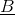.
este un procedeu (o corespondență) prin care fiecărui element din îi corespunde un singur element din 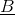.
Notație:  sau 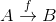, unde reprezintă domeniul de definiție al funcției , iar reprezintă codomeniul (adică mulțimea în care funcția ia valori).
sau 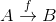, unde reprezintă domeniul de definiție al funcției , iar reprezintă codomeniul (adică mulțimea în care funcția ia valori).
Conform definiției de mai sus, unui element  (unde
(unde  se numește argument) îi corespunde un singur element din . Notăm acest element astfel 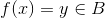, unde 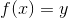 reprezintă imaginea lui prin funcția .
se numește argument) îi corespunde un singur element din . Notăm acest element astfel 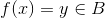, unde 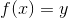 reprezintă imaginea lui prin funcția .
Avem că 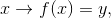 oricare ar fi . Elementul se numește preimaginea lui .
Definiția FE2: Graficul unei funcții
Se numește graficul funcției 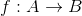, notat cu 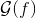, submulțimea produsului cartezian
Astfel, avem mulțimea:
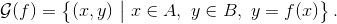
Observații:
- Graficul unei funcții este egal cu mulțimea de perechi ordonate. Imaginea geometrică a graficului unei funcții este mulțimea punctelor din plan, de forma 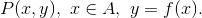
- Pot exista elemente din codomeniu care nu sunt asociate nici unui element din domeniu și, de asemenea, pot exista elemente din codomeniu asociate cu mai multe elemente din domeniu.
- Codomeniul funcției nu este întotdeauna mulțimea valorilor funcției; codomeniul include mulțimea imaginilor elementelor din prin funcția .
Notăm mulțimea tuturor imaginilor elementelor din domeniu cu 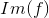 (imaginea lui ) sau 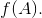
Avem că:
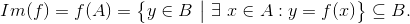
Exemple:
În diagramele următoare ți s-au reprezentat câteva funcții:
Diagrama 1

Graficul funcției reprezentate mai sus este următorul:
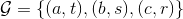.
Diagrama 2

Graficul acestei funcții este mulțimea:
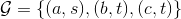.
Diagrama 3

Graficul acestei funcții este reprezentat de:
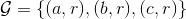.
Moduri de a defini o funcție:
- simetric: arătând pentru fiecare element din domeniu care este imaginea sa.
Exemplu:
- 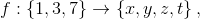 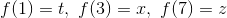 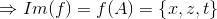.
Prin diagrame, această funcție se reprezintă astfel:

- 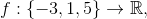 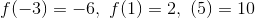 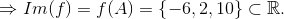
Lăsăm ca și exercițiu pentru cititor, reprezentarea acestui exemplu prin diagrame.
- analitic: adică printr-o expresie sau o formulă generală, în care se dau valori toate elementele din domeniu pentru a obține toate valorile funcției.
Exemplu:
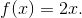
Atunci:
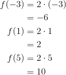
Așadar, avem că 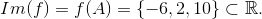
Definiția FE3: Funcții egale
Fie funcțiile și
Spunem că funcțiile 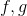 sunt egale, dacă au același domeniu 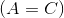, același codomeniu 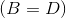 și 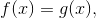 oricare ar fi 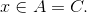
Egalitatea a două funcții se notează astfel: 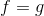.
Exemplu:
Fie funcțiile 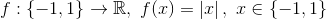 și 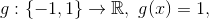 oricare ar fi 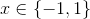.
Se observă că aceste două funcții sunt egale: 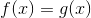, oricare ar fi .
În paginile următoare, profesorii noștri de matematică ți-au pregătit o listă de proprietăți generale ale funcțiilor numerice. Accesează cu încredere aceste pagini pentru a afla ce proprietăți poate avea o funcție.